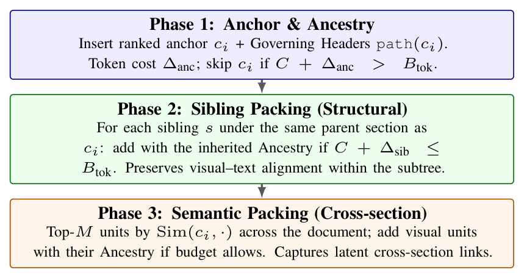

Publications / Top Conferences
HiKEY: Hierarchical Multimodal Retrieval for Open-Domain Document Question Answering

Abstract
Retrieval-augmented generation (RAG) for document-based open-domain question answering (ODQA) over large industrial corpora faces two core bottlenecks: routing to the correct document and combining scattered evidence. Flat text chunks and page-level images often fail to (i) identify the right document among thousands of candidates and (ii) connect multimodal evidence, such as tables and figures, within a fixed token budget. We propose HiKEY, a hierarchical tree-based multimodal retrieval framework that treats document hierarchy as a first-class retrieval signal. Rather than simply chunking text, HiKEY uses Document Hierarchical Parsing (DHP) to reconstruct a logical heterogeneous graph with explicit parent–child relations. At query time, HiKEY follows a hierarchical coarse-to-fine process: it first performs global routing with hierarchical indexes to prune the corpus, and then ranks sections with a multimodal fusion strategy that selects the most discriminative evidence. It finally builds a token-efficient evidence subgraph through hybrid structural–semantic packing. Experiments on ODQA benchmarks show that HiKEY outperforms page- and chunk-based baselines, improving retrieval recall by up to 12.9 points and end-to-end QA by up to 6.8 points.
Key Contribution
Hierarchical retrieval for multimodal document QA with structured evidence assembly.
Method
HiKEY follows how people search long documents: it first narrows the scope using the document structure, then reads the relevant sections together with their tables and figures. The framework has an offline phase and an online phase.
- Offline: hierarchy-aware graph and index construction. The Document Hierarchical Parsing (DHP) module from M3DocDep recovers a logical hierarchy tree from page-level layout blocks. Each text, table, or figure block becomes a node with parent-child edges and an ancestor section path (e.g.,
Title > Section 5 > 5.3). HiKEY then builds two kinds of index cards: a Doc_card (title and section paths) for global routing, and a Sec_card that stores the text, table, and figure units of each section. Tables and figures without captions are enriched with the logically preceding text node found by traversing the tree. - Online Stage 1: hierarchical document routing. Doc_cards are ranked with a hybrid lexical and dense score, and only the top candidate documents are kept.
- Online Stage 2: hierarchical section MaxSim scoring. Within the candidate documents, each unit is scored with a type-specific encoder (hybrid text scoring for text; visual similarity combined with the upper context for tables and figures). A section takes the maximum score over its units, and the final score combines document-level and section-level evidence.
- Hierarchical subgraph assembly. For each selected section, HiKEY inserts the anchor unit with its governing headers (ancestry-aware packing). It then fills the remaining token budget with tables and figures under the same parent section and, if budget remains, semantically similar units from other sections (hybrid evidence expansion).

Results
Document-level retrieval on M3DocVQA and FRAMES, averaged over K = 1, ..., 10.
| Method | M3DocVQA | FRAMES | Average | |||||||||
|---|---|---|---|---|---|---|---|---|---|---|---|---|
| Recall | MRR | Hit | All | Recall | MRR | Hit | All | Recall | MRR | Hit | All | |
| Text chunk-based RAG | ||||||||||||
| Page | 80.6 | 91.3 | 95.0 | 66.4 | 65.4 | 91.9 | 97.1 | 34.4 | 73.0 | 91.6 | 96.1 | 50.4 |
| Length chunking | 82.0 | 90.6 | 95.0 | 69.1 | 65.3 | 92.8 | 96.9 | 33.8 | 73.7 | 91.7 | 96.0 | 51.4 |
| LumberChunker | 81.5 | 90.9 | 95.1 | 68.1 | 64.8 | 92.4 | 96.8 | 33.2 | 73.2 | 91.7 | 95.9 | 50.6 |
| Meta Chunker | 81.2 | 90.8 | 95.0 | 67.7 | 64.9 | 92.4 | 96.8 | 33.3 | 73.1 | 91.6 | 95.9 | 50.5 |
| Structural chunking | 80.6 | 90.5 | 94.8 | 66.9 | 64.0 | 92.1 | 96.6 | 32.4 | 72.3 | 91.3 | 95.7 | 49.7 |
| MultiDocFusion | 83.0 | 91.5 | 95.4 | 70.5 | 66.2 | 93.0 | 97.2 | 34.8 | 74.6 | 92.2 | 96.3 | 52.6 |
| Text-based GraphRAG | ||||||||||||
| RAPTOR | 81.8 | 90.9 | 95.0 | 68.4 | 64.9 | 92.0 | 96.6 | 33.3 | 73.4 | 91.5 | 95.8 | 50.9 |
| HopRAG | 82.3 | 91.1 | 95.2 | 69.3 | 65.8 | 92.2 | 96.8 | 34.2 | 74.1 | 91.7 | 96.0 | 51.8 |
| Page-level multimodal RAG | ||||||||||||
| M3DocRAG | 75.6 | 81.8 | 89.9 | 61.4 | 56.8 | 83.2 | 91.9 | 25.0 | 66.2 | 82.5 | 90.9 | 43.2 |
| VDocRAG | 77.1 | 83.3 | 90.9 | 63.2 | 58.5 | 84.2 | 92.5 | 26.5 | 67.8 | 83.8 | 91.7 | 44.9 |
| Multimodal GraphRAG | ||||||||||||
| MoLoRAG | 76.0 | 82.4 | 90.2 | 62.0 | 57.4 | 83.5 | 92.1 | 25.5 | 66.7 | 83.0 | 91.2 | 43.8 |
| SimpleDoc | 77.3 | 83.5 | 91.1 | 63.6 | 60.6 | 85.4 | 93.2 | 28.4 | 69.0 | 84.5 | 92.2 | 46.0 |
| HiKEY | 84.9 | 91.8 | 96.1 | 73.6 | 73.3 | 94.2 | 97.9 | 46.2 | 79.1 | 93.0 | 97.0 | 59.9 |
End-to-end QA on M3DocVQA and FRAMES.
| Method | M3DocVQA | FRAMES | Average | |||||||||
|---|---|---|---|---|---|---|---|---|---|---|---|---|
| EM | ANLS | ROUGE-L | METEOR | EM | ANLS | ROUGE-L | METEOR | EM | ANLS | ROUGE-L | METEOR | |
| Text chunk-based RAG | ||||||||||||
| Page | 21.1 | 24.0 | 25.0 | 19.0 | 7.0 | 9.8 | 12.7 | 10.6 | 14.1 | 16.9 | 18.9 | 14.8 |
| Length chunking | 17.5 | 19.9 | 21.4 | 16.7 | 6.9 | 9.6 | 12.9 | 10.4 | 12.2 | 14.8 | 17.2 | 13.6 |
| LumberChunker | 21.4 | 24.2 | 25.6 | 19.5 | 6.8 | 9.4 | 12.5 | 10.2 | 14.1 | 16.8 | 19.1 | 14.9 |
| Meta Chunker | 21.3 | 24.1 | 25.5 | 19.4 | 6.8 | 9.4 | 12.5 | 10.2 | 14.1 | 16.8 | 19.0 | 14.8 |
| Structural chunking | 20.6 | 23.3 | 24.6 | 18.8 | 6.4 | 8.9 | 12.0 | 9.7 | 13.5 | 16.1 | 18.3 | 14.3 |
| MultiDocFusion | 23.0 | 25.9 | 27.3 | 20.6 | 7.8 | 10.8 | 13.9 | 11.6 | 15.4 | 18.4 | 20.6 | 16.1 |
| Text-based GraphRAG | ||||||||||||
| RAPTOR | 22.5 | 25.3 | 26.7 | 20.2 | 7.5 | 10.4 | 13.5 | 11.2 | 15.0 | 17.9 | 20.1 | 15.7 |
| HopRAG | 22.8 | 25.7 | 27.1 | 20.5 | 7.7 | 10.7 | 13.8 | 11.5 | 15.3 | 18.2 | 20.5 | 16.0 |
| Page-level multimodal RAG | ||||||||||||
| M3DocRAG | 24.1 | 27.0 | 28.2 | 21.3 | 4.2 | 5.9 | 9.0 | 6.7 | 14.2 | 16.5 | 18.6 | 14.0 |
| VDocRAG | 24.4 | 27.4 | 28.8 | 21.6 | 4.5 | 6.3 | 9.4 | 7.1 | 14.5 | 16.8 | 19.1 | 14.4 |
| Multimodal GraphRAG | ||||||||||||
| MoLoRAG | 25.2 | 28.2 | 30.0 | 22.4 | 4.7 | 6.5 | 9.6 | 7.3 | 15.0 | 17.4 | 19.8 | 14.9 |
| SimpleDoc | 25.6 | 28.7 | 30.1 | 22.5 | 4.9 | 6.8 | 9.9 | 7.6 | 15.3 | 17.8 | 20.0 | 15.1 |
| HiKEY | 27.5 | 30.7 | 32.2 | 23.9 | 10.5 | 14.6 | 17.7 | 15.4 | 19.0 | 22.7 | 25.0 | 19.7 |
- HiKEY outperforms page- and chunk-based baselines on both benchmarks, improving retrieval recall by up to 12.9 points and end-to-end QA by up to 6.8 points.
- In the ablation below, field-separated hierarchy indexing raises averaged R@10 from 81.2 (body only) to 88.6, and coarse-to-fine routing outperforms document-only (87.7) and section-only (76.1) routing.
| Ablation component | Avg R@10 |
|---|---|
| Stage-1: Hierarchy Indexing Strategy | |
| Body-only (No hierarchy) | 81.2 |
| + Concat Title/Header | 84.6 |
| + Field-separated Hierarchy (Ours) | 88.6 |
| Stage-1: Routing Strategy | |
| Doc-only routing | 87.7 |
| Sec-only routing | 76.1 |
| Doc → Sec (Coarse-to-Fine) (Ours) | 88.6 |
| Stage-2: Multimodal Fusion Strategy | |
| Global Search (No routing) | 81.0 |
| Candidate Docs Only | 87.9 |
| + Anchor Subtree (Ours) | 88.6 |
| BM25 only | 87.6 |
| + Text dense | 88.2 |
| + Visual dense (Full Fusion) | 88.6 |
Ablation of Stage-1 hierarchy indexing and routing, and of Stage-2 retrieval scope and multimodal fusion signals (averaged R@10).
BibTeX
@inproceedings{shin-etal-2026-hikey,
title = "{H}i{KEY}: Hierarchical Multimodal Retrieval for Open-Domain Document Question Answering",
author = "Shin, Joongmin and
Shim, Gyuho and
Park, Jeongbae and
Seo, Jaehyung and
Lim, Heuiseok",
editor = "Liakata, Maria and
Moreira, Viviane P. and
Zhang, Jiajun and
Jurgens, David",
booktitle = "Proceedings of the 64th Annual Meeting of the {A}ssociation for {C}omputational {L}inguistics (Volume 1: Long Papers)",
month = jul,
year = "2026",
address = "San Diego, California, United States",
publisher = "Association for Computational Linguistics",
url = "https://aclanthology.org/2026.acl-long.818/",
doi = "10.18653/v1/2026.acl-long.818",
pages = "17967--17987",
ISBN = "979-8-89176-390-6"
}